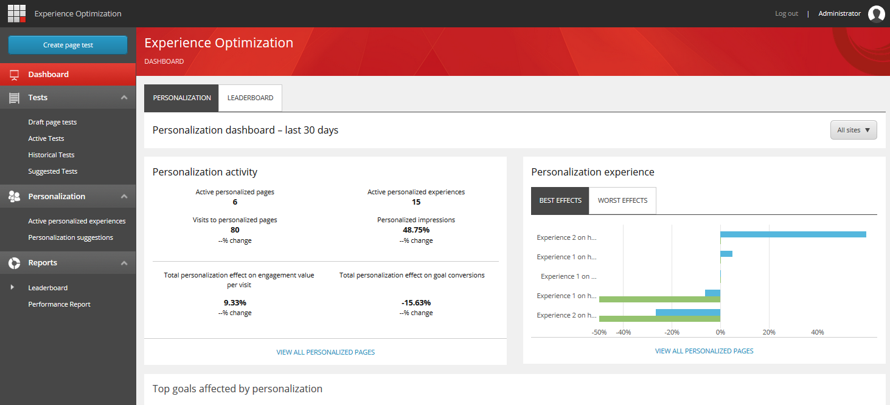

パーソナライゼーション ダッシュボードの使用¶
パーソナライゼーション ダッシュボードは、エクスペリエンス最適化ダッシュボードのタブです。パーソナライゼーション ダッシュボードには、ウェブサイトのパーソナライゼーションに関する多くの主要なパフォーマンス指標が表示されます。結果をフィルタリングして、単一のサイトのデータを表示することができます。
{kind=link}
パーソナライゼーション活動¶
パーソナライゼーション活動カードには、過去30日間のパーソナライズされたコンテンツのハイレベルなKPIが表示されます。タブには以下のデータが表示されます。
パーソナライズされたページの数。
サイト上のパーソナライズされた体験の総数。これには、各パーソナライズされたページのすべてのバリエーションが含まれます。
パーソナライズされたページへの総訪問数（デフォルトのエクスペリエンスを閲覧した訪問を含む）。
パーソナライズされたインプレッション（パーソナライズされた体験を閲覧したパーソナライズされたページへの訪問の割合）。
1 回あたりのエンゲージメント値に対するパーソナライズの総効果。デフォルトのエクスペリエンスの 1 回あたりの後続値と比較して、すべてのパーソナライズされたエクスペリエンスの 1 回あたりの後続値の合計として計算されます。
目標コンバージョンに対するパーソナライズの総効果。デフォルトのコンバージョン率と比較して、すべてのパーソナライズされたエクスペリエンスのコンバージョン率として計算されます。
変化率：各KPIについて、合計またはパーセンテージが過去30日間と比較してどの程度変化したかを、元のパーセンテージで示します。
最高・最悪のパーソナライズ¶
このチャートは、パーソナライズされたエクスペリエンスのパフォーマンスが最も高いものと最も悪いものを示しています。このチャートに含まれる各エクスペリエンスについて、上のバーは訪問ごとのトレーリング値の効果を示し、下のバーはデフォルトのエクスペリエンスと比較した場合のゴールコンバージョン率の効果を示しています。
パーソナライゼーションが影響するトップゴール¶
このチャートは、訪問者がデフォルトのエクスペリエンスとパーソナライズされたエクスペリエンスのどちらを取得するかによって、コンバージョン率が最も大きく変化するゴールを示しています。このチャートには、パーソナライズによってコンバージョン率が最も向上する5つのゴールと、パーソナライズによってコンバージョン率が最も向上しない5つのゴールが含まれています。
Sitecoreは、1つ以上のパーソナライズされた体験を閲覧するすべての訪問者に対する1つのゴールの平均コンバージョン率と、デフォルトのコンテンツのみを閲覧するすべての訪問者に対するゴールの平均コンバージョン率を比較しています。コンバージョン率効果は、パーソナライズされた平均コンバージョン率とデフォルトの平均コンバージョン率の差です。
チャートの各行は、過去30日間の1つのゴールのコンバージョン率効果を示しています。
チャートの凡例でゴール名をクリックすることで、チャート内のラインを表示したり非表示にしたりすることができます。